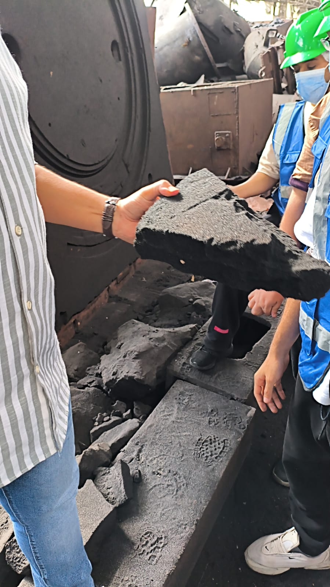
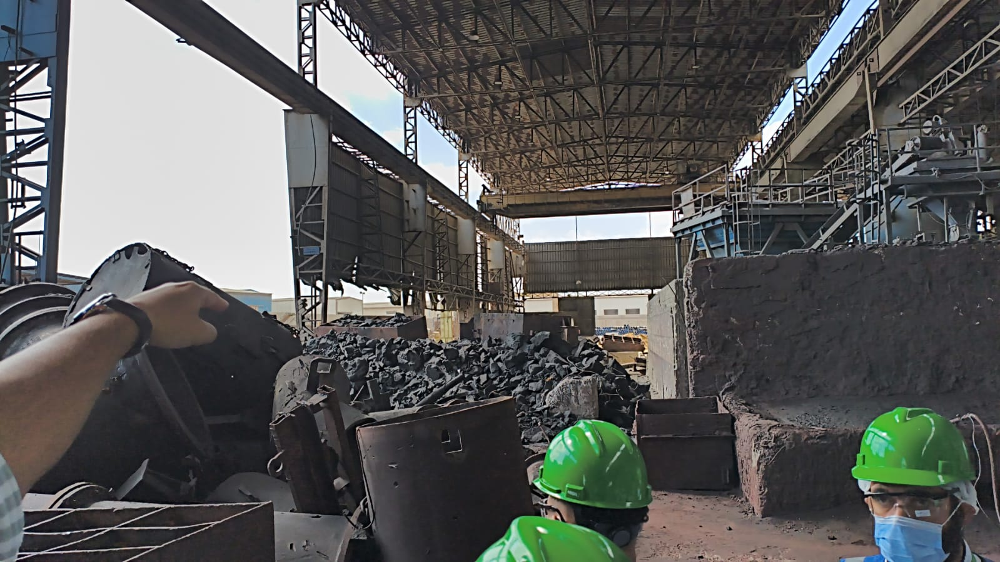
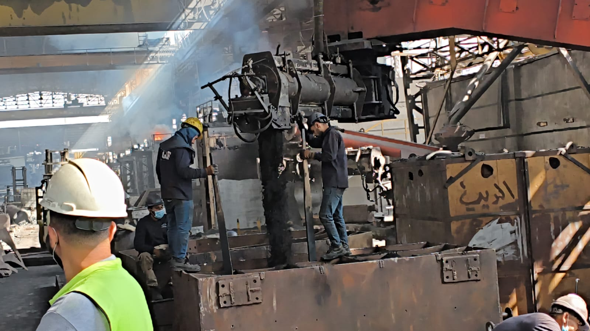
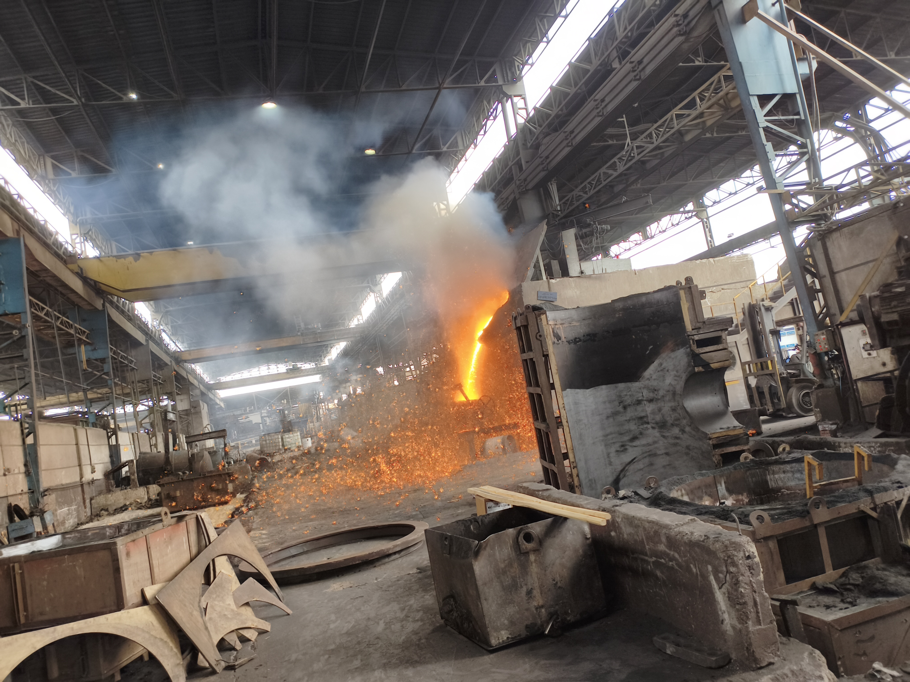
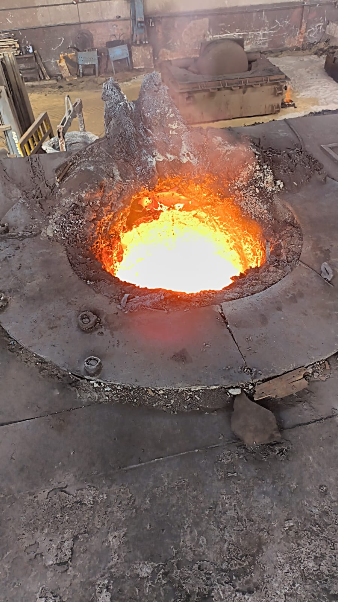
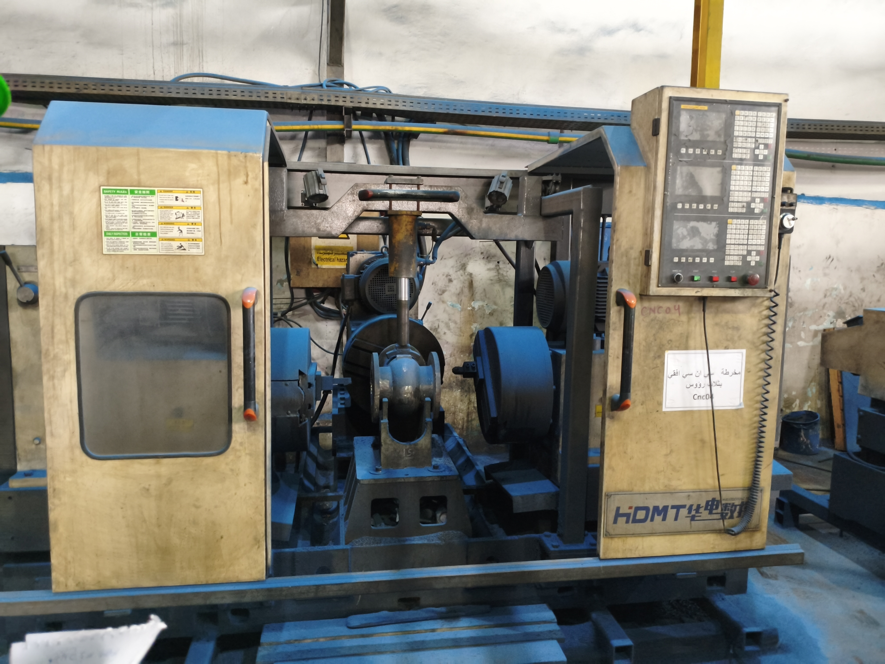
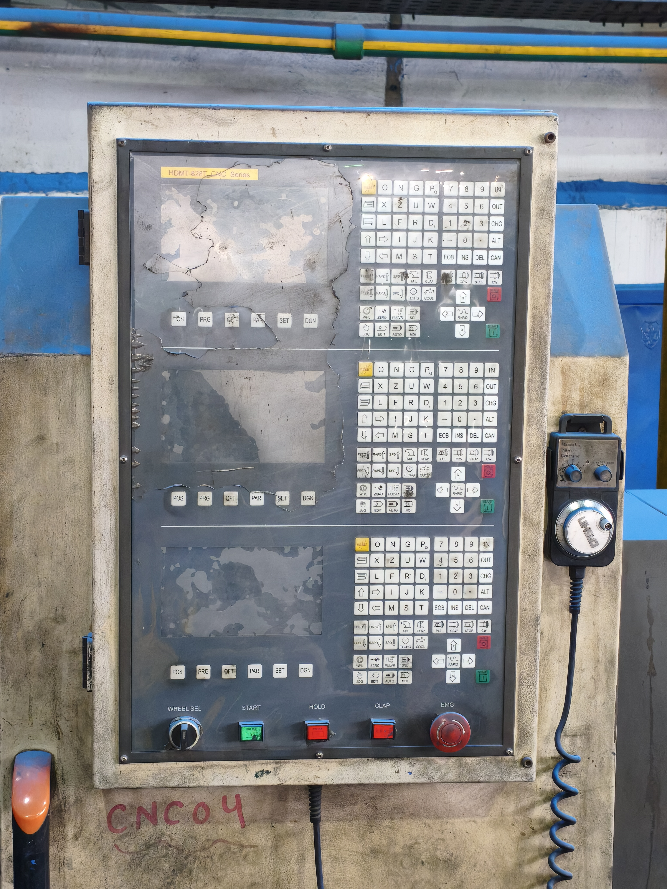

01. Induction Furnaces
Add your observations about induction furnace operation, its industrial applications, and the melting process.



An industrial exploration of foundry operations, metal casting, furnace technologies, and CNC machining.

During this industrial visit to Greater Cairo Foundries, I had the opportunity to observe several manufacturing operations and gain practical exposure to foundry technologies.
The visit included observations of furnace operations, metal casting processes, and CNC machining applications.
Add your observations about induction furnace operation, its industrial applications, and the melting process.



Add your observations about electric arc furnace technology and its role in metal production.
Describe the casting operations, materials, and production observations.


Describe the CNC machine observed, its machining operations, and the finished component.


Add your technical observations, comparisons between manufacturing methods, and lessons learned during the visit.
Summarize the most important knowledge and practical experience gained from this visit.